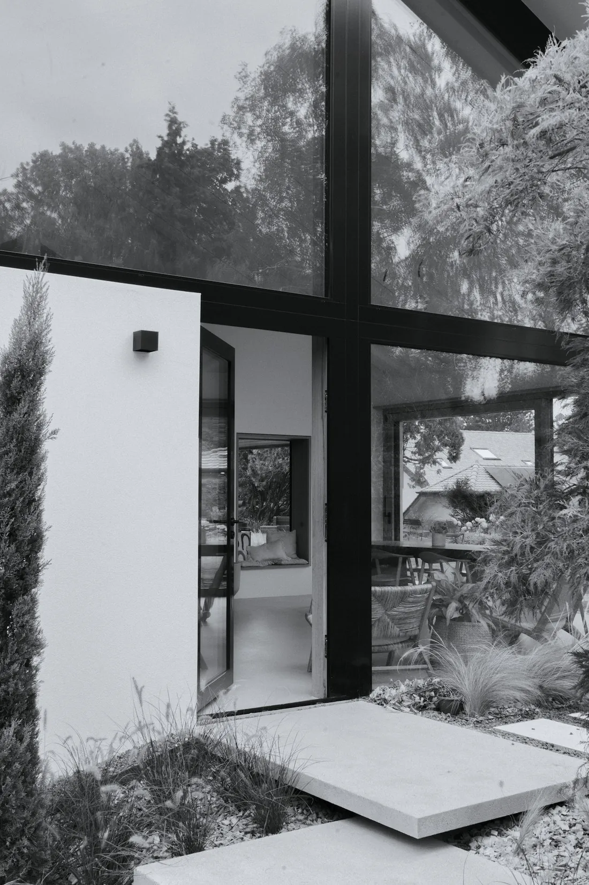
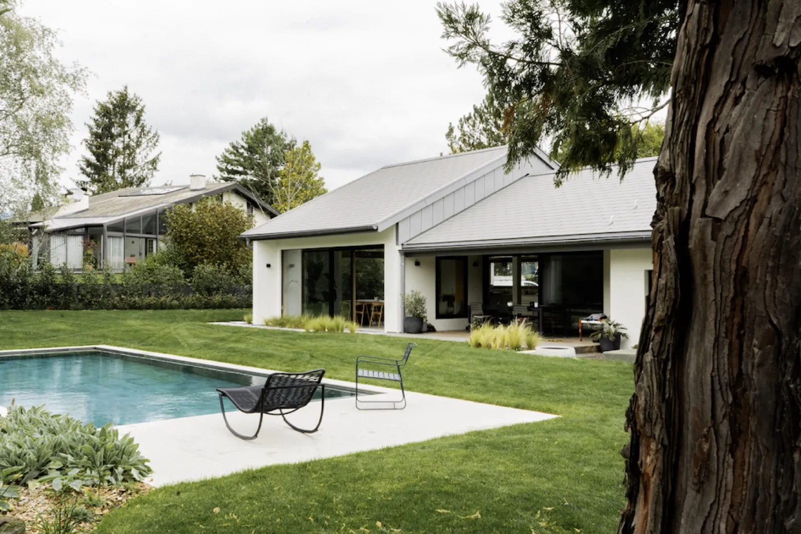
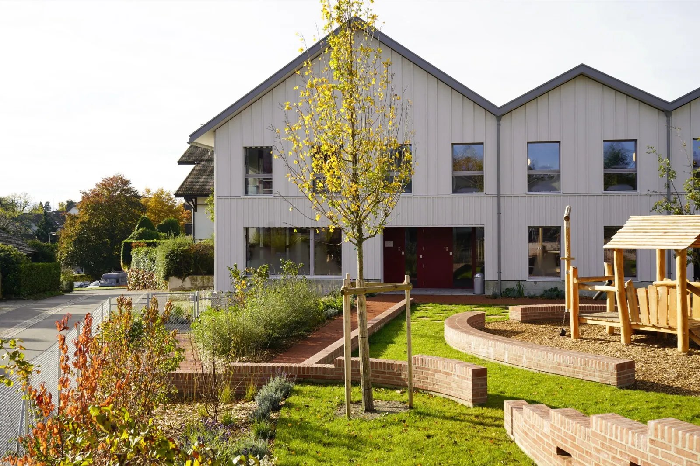
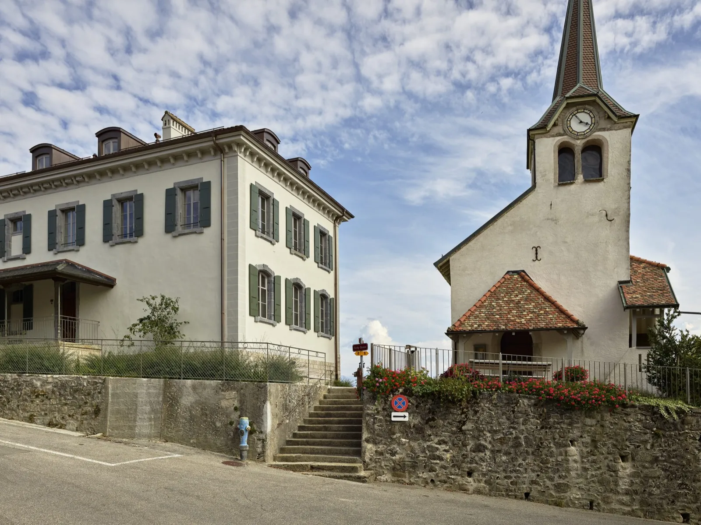
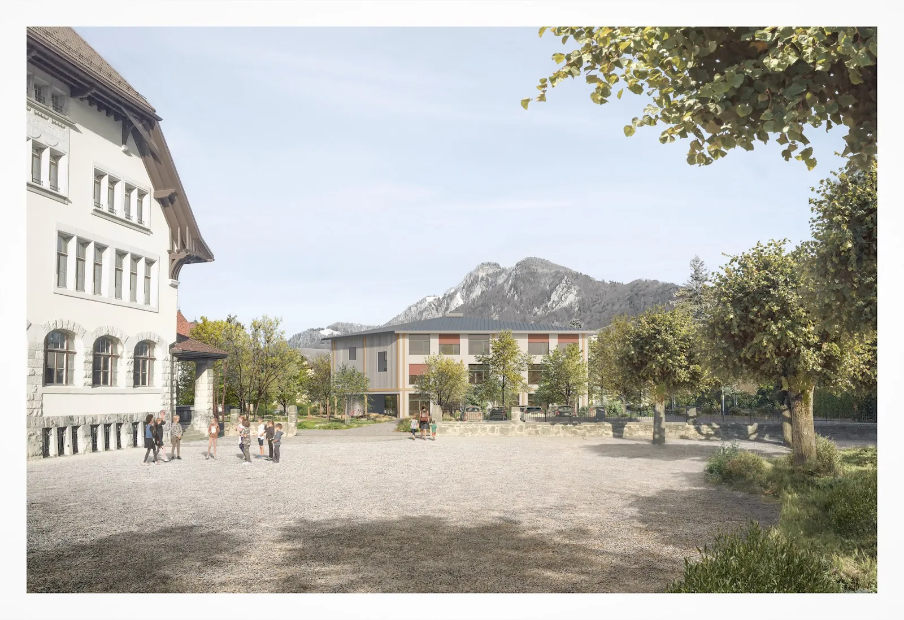

01 — Le bureau
Philippe Le Roy
Architecte EPFZ indépendant à Nyon depuis 2016, après dix ans dans l'un des grands bureaux genevois. J'accompagne particuliers et collectivités, du logement à l'équipement public, sur Genève, Vaud et le Valais.
EPFZarchitecte diplômé
SIAregistre suisse
FR · DEbilingue

02 — Projets
Réalisations & concours.
Résidentiel, patrimoine et équipements publics sur La Côte et en Suisse romande. Un aperçu, et la sélection complète sur la page Projets.

01
Extension d'une villa familiale
Mies · VaudTransformation

02
Crèche de Prangins
Prangins · VaudPublic · éco-construction

03
Collège classé de Féchy
Féchy · Vaud1er prix

04
Extension de l'école de Broc
Broc · FribourgConcours

Le territoire
Bâtir sur La Côte. Entre lac et vignoble.
Contact
Un projet en tête ? Parlons-en.
Un agrandissement, une transformation, un permis de construire ou un équipement public : écrivez quelques mots, Philippe vous répond personnellement.
Prendre contact